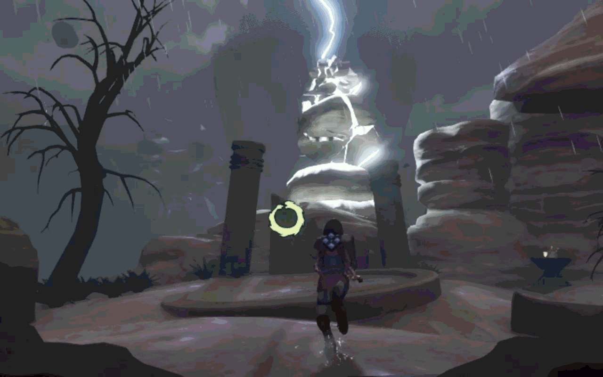
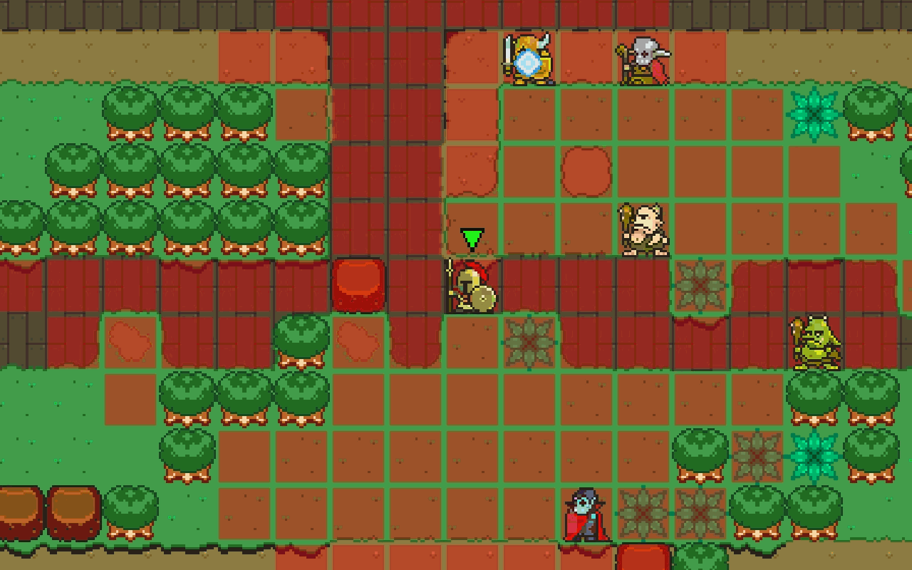

Hi, I'm Ethan Hall
And I'm a Technical Designer!
As a designer, it's not my responsibility to think up the best designs; it's my responsibility to find them. By researching and understanding the target audience, I can strategically decide which ideas to explore and which to leave for the time being. Using my technical skills, I can then put quick-yet-functional prototypes in the hands of playtesters, and/or build tools to speed up the workflows of both designers and programmers.
By following this methodology, I can effectively search the design space of the project for the perfect mechanics, solutions, and systems, and support my fellow developers in their endeavors to do the same. In a way, my job is simple: waste my time so the team doesn't have to waste theirs.
As a Technical Designer, I bridge the worlds of programming and design, serving as a force multiplier for both sides of the game development equation. Tech Design is a tough and rewarding field, and one I'm thrilled to contribute to!
Featured Games

Spaghetti Spell
A witchy farming game where you grow your spells.
- Unity
- Solo
- Unique and Complex Systems
- Utility AI that Players can Hook Into

Atlas Will Fall
A short Metroidvania platformer where you play as a psychic robot.
- Unity
- Solo
- Strong, Interconnected Level Design
- Suite of Fun Movement Abilities

Ravenous Sky
An action adventure game in which you brave a divine storm and free its source.
- Unreal
- Team (20+ Teammates)
- Grappling System
- UI and Menus

Spell Sculptor
A turn-based dungeon crawler where you craft your own spells.
- Unity
- Solo
- Robust Spell Crafting System
- Level, Encounter, and Boss Design Showcase